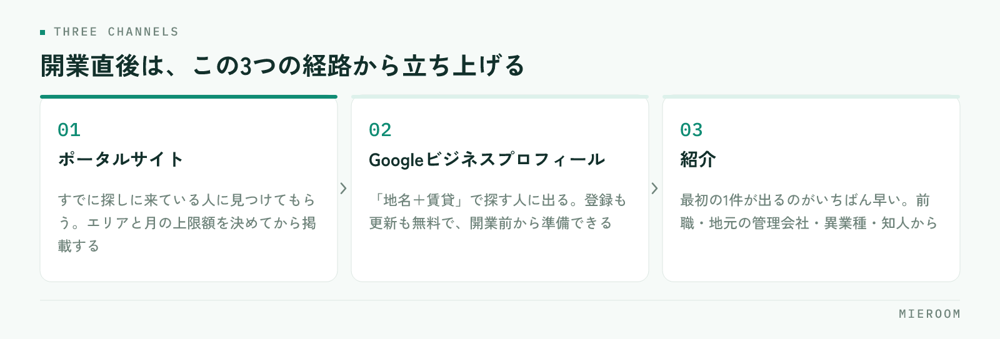

免許が下り、事務所が整い、業者間サイトにもつながった。それでも電話は鳴らない——開業直後にいちばん多い状態です。原因は営業力ではなく、お客様がお店にたどり着く経路が、まだ1本も通っていないことにあります。この記事では、最初の反響を作るための3つの経路と、その順番を整理します。
この記事の結論
開業直後の集客は、手を広げるより経路を3本だけ通し、来た反響を1件も落とさないことが先です。ポータルサイト・Googleビジネスプロフィール・紹介の3つを、この順で立ち上げます。
反響が来ないのは、経路がまだ通っていないから
開業したばかりのお店には、実績も口コミも掲載履歴もありません。お客様の側から見ると、存在を知る手段がない状態です。物件を扱えることと、お客様に見つけてもらえることは別の話で、後者は意識して作らないと立ち上がりません。
このとき起きがちなのが、思いつく手段を一度に全部始めてしまうことです。ポータルに出し、SNSを開設し、チラシを撒き、看板を出す。手数は増えますが、どれも中途半端になり、しかもどこから反響が来たのかが分からなくなります。
開業直後に必要なのは、手数ではなく経路です。まず数を絞って通し、反応があった経路を太くする。この順番のほうが、結果的に早く回りはじめます。
最初に立ち上げる3つの経路
優先するのは次の3つです。それぞれ立ち上がるまでの時間が違うので、同時に着手して構いません。

SNSや自社サイトからの集客は、続ければ効いてきますが、成果が出るまでに時間がかかります。開業直後は、すでにお客様が探しに来ている場所（ポータル・地図検索）と、すでに人のつながりがある場所（紹介）から始めるのが現実的です。
3つとも、開業前から準備を始められます。特にGoogleビジネスプロフィールと紹介の準備は、免許の交付を待つ間にも進められます。
ポータルサイト：出す前に決めておくこと
賃貸仲介の反響で最も大きいのはポータルサイトです。ただし、掲載を始める前に決めておかないと、費用だけが出ていきます。
- どのエリア・どの価格帯で戦うか：全域に薄く出すより、通える範囲を絞ったほうが問い合わせは濃くなります
- 掲載する物件の質を先に決める：おとり掲載は論外として、すでに決まった物件を残さない運用ルールを最初に作ります
- 写真と間取りの用意に時間をかける：同じ物件が並ぶ中で選ばれる理由は、ほぼ写真と情報量です
- 反響の受け口を決める：電話かメールかフォームか。どこに届くかを決めてから掲載します
- 月いくらまで出すかを先に決める：反響が出る前に上限を決めておかないと、判断が感情に寄ります
掲載は「出したら終わり」ではありません。反響が出はじめたら、媒体ごとに費用と成約を見比べる必要があります。その見方は媒体別ROIの考え方にまとめています。
Googleビジネスプロフィール：開業直後こそ効く
見落とされがちですが、「地名＋不動産」「地名＋賃貸」で探す人は必ずいます。地図検索に出るかどうかは、開業直後の小さなお店でも整備すれば変わります。しかも登録も更新も無料です。
やることは多くありません。オーナー確認を済ませ、店舗名・住所・電話番号・営業時間を正確に登録し、外観と店内の写真を載せる。取り扱い（賃貸・売買・管理など）を登録し、営業時間の変更はその都度直す。これだけで、少なくとも「探されたときに見つかる」状態になります。
口コミは、開業直後はゼロから始まります。焦って集めようとせず、来店いただいた方に自然にお願いする形で構いません。返信は必ず全件に行います。
紹介：いちばん早く効く経路
3つのうち、最初の1件が出るのがいちばん早いのは紹介です。開業前から動けるのもここです。
- 前職からのつながり：競業の取り決めを確認したうえで、可能な範囲で開業を知らせます
- 地元の管理会社・オーナー：物件を預かる話と、お客様を紹介いただく話は別に進みます
- 異業種の事業者：引越業者、リフォーム業者、保険代理店など、住まいの前後に関わる相手
- 既存の知人・家族：住み替えの予定がある人は身近にいます
紹介は数が読めない代わりに、決まりやすく、費用がかかりません。開業直後の資金繰りを支えるのは、たいてい紹介です。ただし紹介だけに頼ると数が伸びないので、ポータルと地図検索を並行して立ち上げます。
来はじめた反響を、経路ごとに記録する
3つの経路が通りはじめたら、次にやるのは記録です。ここを最初からやるかどうかで、半年後の判断の精度が変わります。
| 記録する項目 | なぜ必要か |
|---|---|
| 反響が来た経路 | どこにお金と時間を足すかの判断材料になる |
| 受けた日時と初回返信の日時 | 初動の速さは成約率に直結する |
| 対応した担当者 | 人によるばらつきに早く気づける |
| 来店したか／内見したか | どの段階で止まっているかが分かる |
| 成約・不成約とその理由 | 掲載する物件と価格帯の見直しに使う |
開業直後は件数が少ないので、記録は苦になりません。苦になってからでは、もう始められません。件数が増えたときに「どの媒体が効いているか分からない」となるのは、この時期に記録を始めなかったお店です。
初回返信までの時間は、特に意識してください。反響は複数店舗に同時に送られていることが多く、先に返した店が話を進めます。詳しくは反響の初動5分で扱っています。
記録の型は、件数が少ないうちに決めておくものです。あとから作ると、過去の反響を遡って入力し直すことになり、たいていやり切れません。最初の1件目から同じ形で残してください。
よくある質問
開業してからどれくらいで反響が来はじめますか？
ポータルサイトは何社に出すべきですか？
自社ホームページは開業時に必要ですか？
まとめ：経路を3本通し、1件目から記録する
開業直後の集客でやることは、多くありません。ポータル・Googleビジネスプロフィール・紹介の3本を通し、来た反響を1件も落とさない。この2つだけです。手を広げるのは、どの経路が効いているかが見えてからで間に合います。
今日から着手できるのは、Googleビジネスプロフィールの登録と、紹介をお願いする相手の一覧づくりです。どちらも費用がかかりません。ポータルは、掲載エリアと上限額を決めてから動きます。
ミエルームは、反響の受付から追客・来店・成約までを1か所で記録し、経路ごとの反響数と成績を見られるようにしています。ポータルのメール反響や問い合わせフォームの自動取込、LINE・SMSでの自動追客にも対応しており、開業直後の少人数でも記録が続く形にできます。デモアカウントの発行と、最短即日でのスタートが可能です。開業準備の段階からご相談ください。